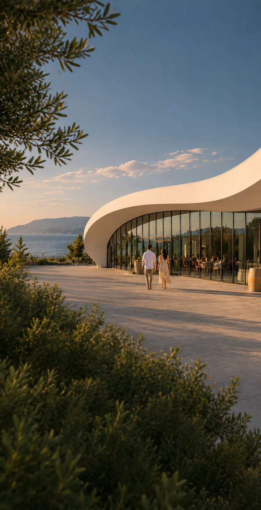

Данные анкеты
После отправки мы сохраняем в Nextcloud выбранные ответы и расшифровку комментариев, чтобы оценивать дегустации.
Статистика посещений
Для статистики посещений браузер хранит случайный идентификатор до 180 дней. Мы учитываем открытие анкеты, пройденные шаги, тип устройства, браузер, систему, язык и источник перехода.
При переходе с другого сайта сохраняется только его домен.
Настройки приватности
В статистике нет IP-адресов и записей голоса. Анкета учитывает сигналы браузера Do Not Track и Global Privacy Control.
Отправка ответов работает и при выключенной аналитике.